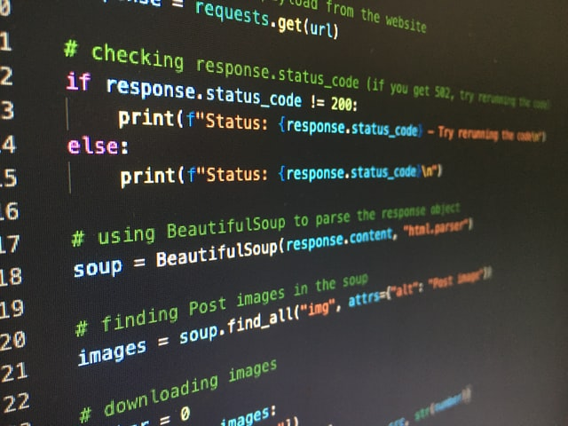
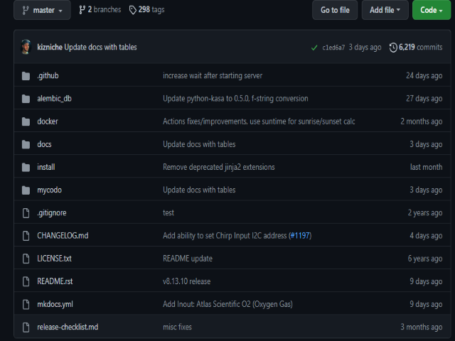

Semana #4 Introducción

Los Sistemas en tiempo discreto, los cuales involucran señales de datos muestreados o señales
digitales. Son sistemas dinámicos en los cuales participan una o más variables las cuales en
ciertos instantes de muestreo
Diapositivas de la clase
Semana #5 Python For MATLAB

En términos técnicos, Python es un lenguaje de programación de alto nivel,
orientado a objetos, con una semántica dinámica integrada, principalmente para el desarrollo
web, analisis de datos, inteligencia artificial, machine learning, analisis de datos,
microcontroladores y un sin fín de aplicacion
Codigo Python
Semana #6 Prototipos guia

Proyectos similares funcionales implementados en otros lugares del mundo como una solución viable
para afrontar multiples problematicas como la falta de alimentos
Diapositivas de la clase